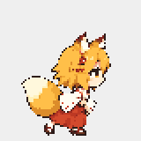
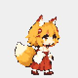
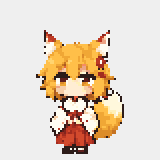
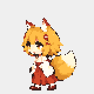
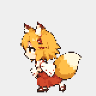
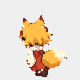
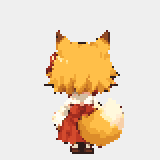
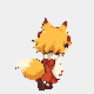

right-walk

Mỗi vòng: bắt đầu → đi/chạy → dừng. GIF tạo từ chính Animator dùng trong runner; phase theo quãng đường, không di chuyển vật lý trên vùng trống. Riêng GIF turn kiểm tra đổi hướng qua chính diện.







